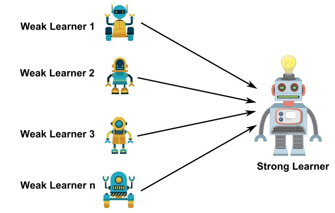
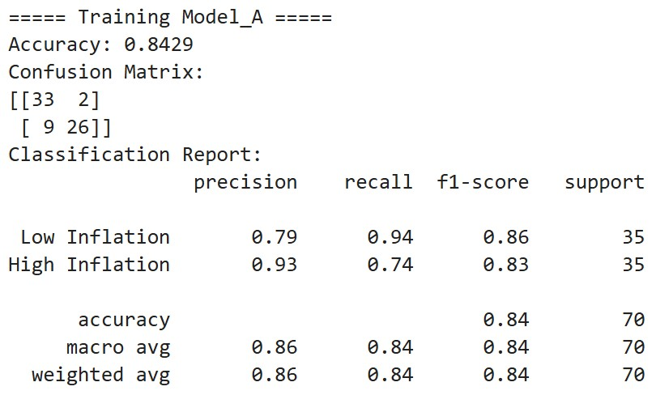
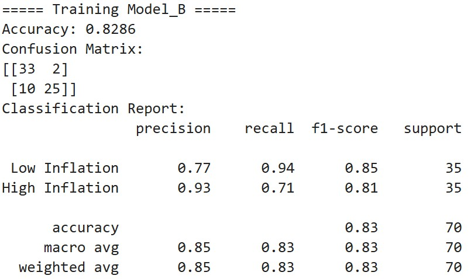
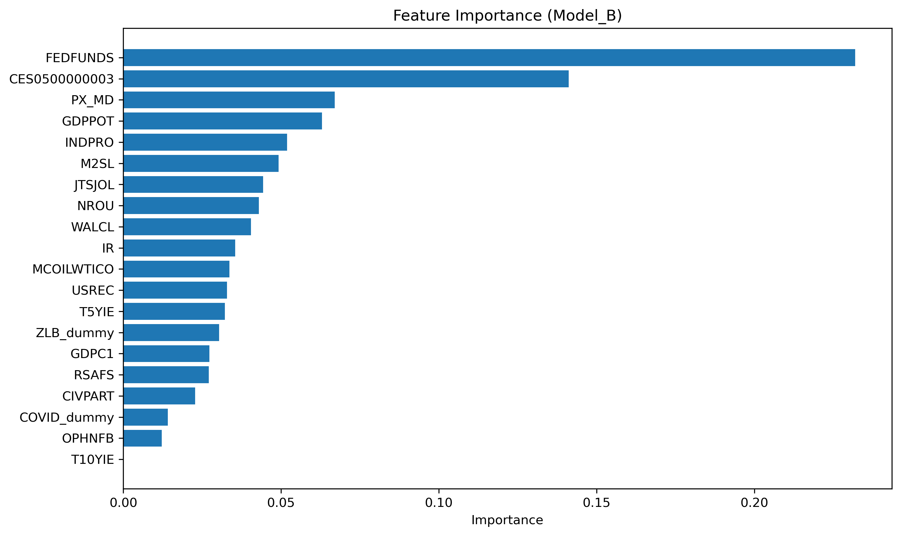
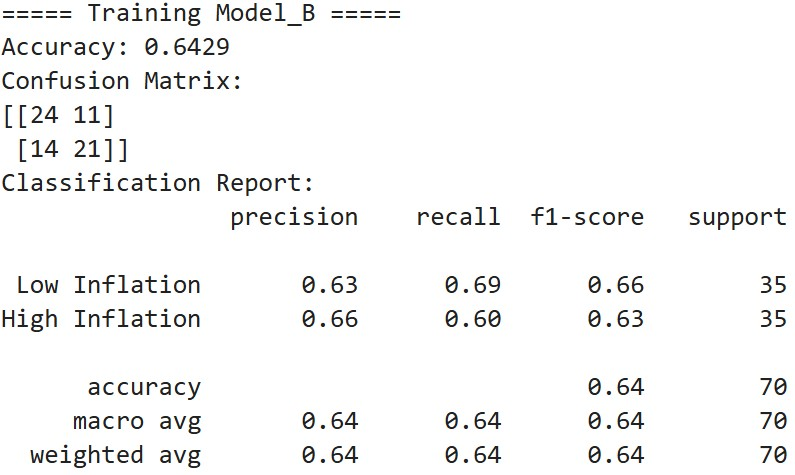
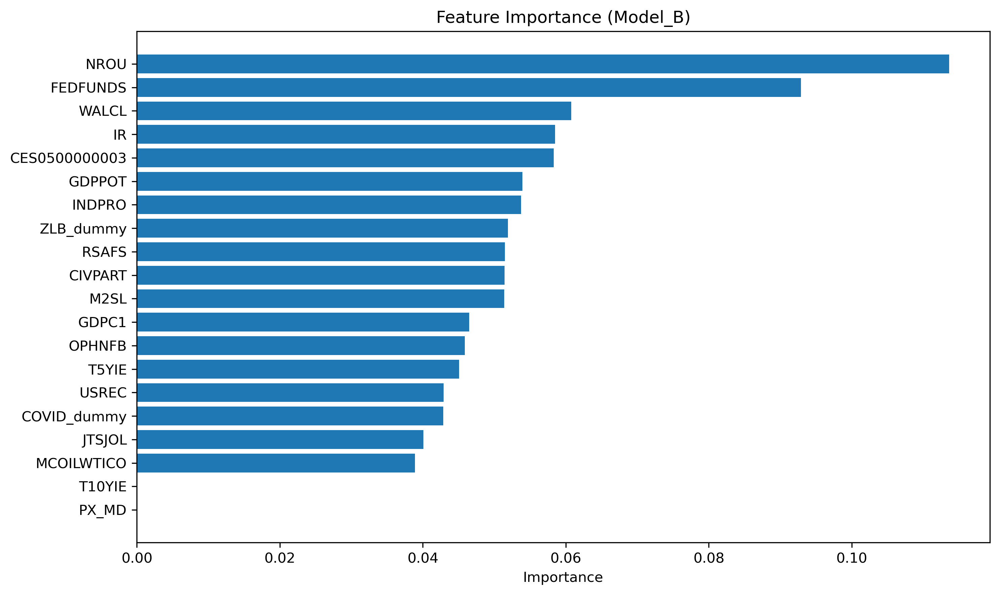
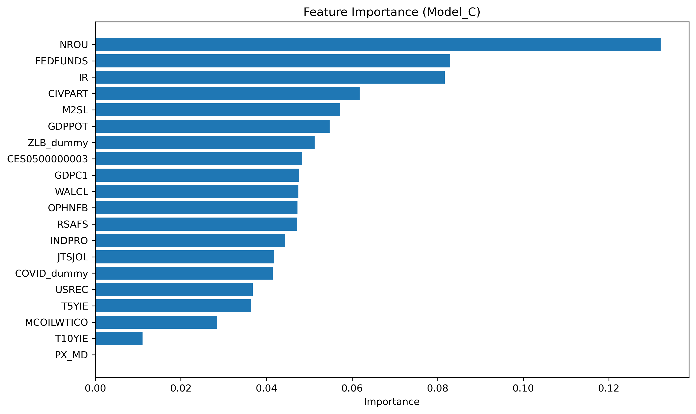
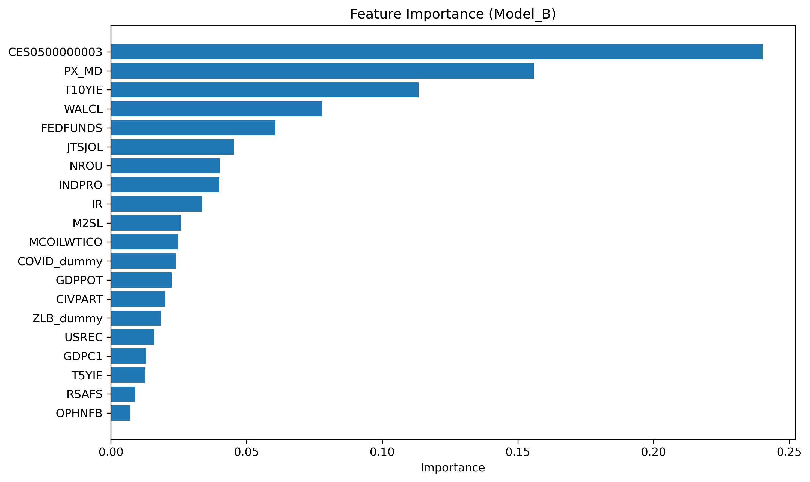

Boosting
Overview
Ensemble learning refers to methods that combine multiple models to achieve higher predictive accuracy than any single model could provide. Among ensemble techniques, boosting is a powerful approach that builds a strong predictive model by sequentially adding many weak learners. A weak learner is a simple model—often a shallow decision tree—that performs only slightly better than random guessing. Although each weak learner has limited predictive capability, boosting improves overall performance by allowing each new learner to correct the errors of the previous ones.
Boosting operates through an iterative refinement process. Each weak learner focuses on the mistakes made by the ensemble so far, gradually reducing both bias and variance. In early iterations, boosting decreases bias by adding learners that capture patterns missed by prior models. Later iterations refine the decision boundaries more carefully, with learning-rate regularization preventing excessive variance or overfitting.
Differences Between AdaBoost, Gradient Boosting, and XGBoost
- AdaBoost
- Adjusts the weights of individual samples based on whether they were misclassified.
- Misclassified samples receive higher weights so the next learner focuses on harder cases.
- Works especially well for classification with simple decision stumps or shallow trees.
- Gradient Boosting
- Each new learner fits the residuals (errors) of the previous model.
- Uses gradient descent on the loss function, allowing flexibility for regression or classification.
- Each tree incrementally improves the prediction by reducing the remaining error.
- XGBoost
- An optimized and regularized version of Gradient Boosting.
- Incorporates L1/L2 regularization to control model complexity.
- Includes system-level optimizations such as parallelization, sparse-aware learning, and efficient tree-splitting algorithms.
- Known for high speed and state-of-the-art performance on large datasets.
Concepts: Bias, Variance, and Iterative Error Reduction
- Boosting reduces bias by adding learners that progressively capture more structure in the data. Learning rate regulates how strongly each new learner influences the ensemble, helping prevent overfitting. As more learners are added, the ensemble can represent increasingly complex relationships, but careful tuning of hyperparameters is necessary to control variance.
Weighting Samples and Minimizing Residuals
- Boosting emphasizes improvement on the model’s weaknesses:
- AdaBoost increases the weights of misclassified samples.
- Gradient Boosting models the residuals directly.
- XGBoost further optimizes residual fitting through second-order gradient information and regularization.
- These mechanisms ensure that each iteration focuses on the most informative parts of the error landscape.
Key Hyperparameters
Learning Rate
Controls the contribution of each weak learner. Lower values improve generalization but require more estimators.Number of Estimators
Determines how many weak learners are combined. More estimators increase model capacity but may lead to overfitting if not balanced.Tree Depth
Controls the complexity of each weak learner. Shallow trees reduce variance, while deeper trees capture more structure but risk overfitting.


Data Prep
- The sample image of the data used in the analysis on this page is shown below. This dataset corresponds to the one shown in “Merged Cleaned Data” at the end of Data Gathering and Data Cleaning. The dataset can be found here.
- For this analysis, the target variables—inflation rates (
PCEPILFE_YoY,PCEPILFE_MoM) and the unemployment rate (UNRATE)—were binarized to apply the boosting. The historical median of each variable was used as a threshold; periods with values above the median were defined as “High Inflation” or “High Unemployment” (1), and all others as “Low” (0).
- For this analysis, the target variables—inflation rates (

The training and testing data must be disjoint sets, meaning they have no data points in common. The reason is to get an honest evaluation of the model’s ability to generalize to new, unseen data. If the sets overlap, the model is being tested on data it has already “seen” during training, which would be like giving a student an exam with questions they had already memorized. Keeping the training and testing sets disjoint is the only way to get a true measure of the model’s predictive performance.
The training and testing data used to predict the year-over-year (YoY) inflation (
high_inflation_YoYderived fromPCEPILFE_YoY), month-over-month (MoM) inflation (high_inflation_MoMderived fromPCEPILFE_MoM), and unemployment rates (high_unemploymentderived fromUNRATE) are shown in Figure 1 ~ Figure 6, respectively.
Training and Test Data for YoY Inflation Prediction
Defining Predictors and Target: The binarized YoY inflation rate (
high_inflation_YoY) was set as the target variable (y). All other potential target variables regarding inflation and unemployment were excluded from the feature set (X) to prevent data leakage.Data Splitting: The dataset was divided into a 70% training set and a 30% testing set using stratified sampling to ensure the class proportions were identical in both sets.
Selective Scaling: Only continuous variables were standardized using
StandardScaler, while dummy variables (e.g., for recessions) were excluded from this process. The scaler was fit on the training data and then applied to the test data to prevent data leakage.

Training and Test Data for MoM Inflation Prediction
Defining Predictors and Target: The binarized MoM inflation rate (
high_inflation_MoM) was set as the target variable (y). All other potential target variables regarding inflation and unemployment were excluded from the feature set (X) to prevent data leakage.Data Splitting: The dataset was divided into a 70% training set and a 30% testing set using stratified sampling to ensure the class proportions were identical in both sets.
Selective Scaling: Only continuous variables were standardized using
StandardScaler, while dummy variables (e.g., for recessions) were excluded from this process. The scaler was fit on the training data and then applied to the test data to prevent data leakage.


Training and Test Data for Unemployment Rates
Defining Predictors and Target: The binarized unemployment rate (
high_unemployment) was set as the target variable (y). All other potential target variables regarding inflation and unemployment were excluded from the feature set (X) to prevent data leakage.Data Splitting: The dataset was divided into a 70% training set and a 30% testing set using stratified sampling to ensure the class proportions were identical in both sets.
Selective Scaling: Only continuous variables were standardized using
StandardScaler, while dummy variables (e.g., for recessions) were excluded from this process. The scaler was fit on the training data and then applied to the test data to prevent data leakage.


Code
- For the code used in this chapter (Boosting), please refer here.
Results
To evaluate how different hyperparameter configurations affect model performance, three XGBoost models—Model A, Model B, and Model C—were trained and compared. These models vary in model depth, number of boosting rounds, learning rate, and sampling ratios, allowing for a systematic assessment of the bias–variance trade-off.
Model A is designed as a balanced and stable baseline, with moderate tree depth and a standard learning rate that avoids excessive complexity.
Model B increases both the number and depth of trees, enhancing the model’s capacity to capture nonlinear patterns but potentially raising the risk of overfitting.
Model C uses shallower trees combined with a higher learning rate, creating a lightweight model that emphasizes generalization through increased bias.
Model Parameter Summary
| Model | n_estimators | max_depth | learning_rate | subsample | colsample_bytree |
|---|---|---|---|---|---|
| Model A | 200 | 3 | 0.05 | 0.8 | 0.8 |
| Model B | 300 | 4 | 0.03 | 0.7 | 0.9 |
| Model C | 150 | 2 | 0.1 | 0.9 | 0.7 |
- These three configurations enable a structured comparison of performance metrics such as accuracy, confusion matrices, and feature importance across varying model complexities.
Confusion Matrix for YoY Inflation Prediction
The three XGBoost models show broadly similar patterns in their confusion matrices. All models classify low-inflation periods with high accuracy, correctly identifying 33 out of 35 observations. The main differences arise in their ability to detect high-inflation periods. Model C performs best, correctly identifying 27 out of 35 high-inflation months, followed by Model A (26/35) and Model B (25/35). This indicates that Model C offers the most balanced performance across both classes, while Model A and Model B tend to slightly underpredict high-inflation episodes.
The feature importance results show that a few macroeconomic indicators are particularly influential in predicting high-inflation periods. The federal funds rate (
FEDFUNDS) is consistently the strongest predictor across all models. Average Hourly Earnings of All Employees, Total Private (CES0500000003), 1-Year Expected Changes in Inflation Rates (PX_MD), and Real Potential GDP (GDPPOT) also rank highly. These variables capture wage pressures, inflation expectations, and long-run economic capacity—factors closely tied to inflation dynamics. Although minor differences appear across models, the same key predictors consistently dominate, indicating stable and robust signals.






Confusion Matrix for MoM Inflation Prediction
The three XGBoost models exhibit broadly similar patterns in their confusion matrices for MoM inflation prediction. Overall performance is weaker than in the YoY setting, reflecting the higher volatility and noise in month-to-month inflation changes. Model B performs best, correctly identifying 24 low-inflation and 21 high-inflation observations. Model C performs moderately, while Model A yields the weakest results. All three models misclassify a sizable number of observations in both directions, indicating that MoM inflation is inherently more difficult to predict using the available macroeconomic indicators.
The feature importance results similarly highlight a small set of dominant predictors. The noncyclical rate of unemployment (
NROU) and the federal funds rate (FEDFUNDS) consistently appear as the most influential variables, followed by import prices (IR), labor-market participation measures (CIVPART), real potential GDP (GDPPOT), and the money supply (M2SL). These indicators capture labor-market slack, monetary policy stance, and real-economic conditions, all of which contribute to explaining rapid month-to-month inflation movements. As with the YoY model, the ranking differs slightly across specifications, but the central macroeconomic drivers remain stable and robust.






Confusion Matrix for Unemployment Rates Prediction
The confusion matrices for the unemployment prediction models show that all three XGBoost configurations achieve very high and nearly identical performance. Each model correctly classifies almost all observations in both categories, with only three high-unemployment months misclassified as low. As a result, all models attain the same accuracy of 0.9571, indicating that the underlying features provide strong and stable signals for distinguishing between low- and high-unemployment periods.
The feature importance results highlight a consistent set of dominant predictors across models. Average Hourly Earnings of All Employees, Total Private (
CES0500000003), 1-Year Expected Changes in Inflation Rates (PX_MD), and the 10-Year Breakeven Inflation Rate (T10YIE) appear as the most influential variables, followed by monetary and real-activity indicators such as the total assets of Federal Reserve (WALCL), the federal funds rate (FEDFUNDS), and industrial production (INDPRO). These features collectively capture labor market conditions, price expectations, interest rate dynamics, and broader economic activity. Although minor differences appear across models, the same key predictors consistently dominate, indicating stable and robust signals.




Conclusions
The boosting models revealed clear patterns in the inflation and unemployment data. Across tasks, boosting helped capture nonlinear interactions among macroeconomic variables and produced stable and interpretable results. The models consistently highlighted the importance of monetary policy indicators and labor market conditions in predicting inflation regimes, while unemployment classifications were highly accurate across all parameter settings.
The comparison of hyperparameters showed that model performance is sensitive to the chosen level of complexity. Moderate tree depth and learning rates often provided a good balance between capturing relevant structure and avoiding overfitting, though deeper trees performed best in a few cases—particularly for the more volatile month-to-month inflation predictions. This suggests that the optimal hyperparameter configuration depends on the characteristics of each prediction task.
Future improvements could include using cross-validation for more reliable model selection, applying alternative boosting algorithms such as LightGBM or CatBoost, and incorporating SHAP values to better explain individual feature contributions. Expanding the feature set or integrating time-series-oriented methods may further strengthen predictive performance, especially for high-frequency outcomes like MoM inflation.